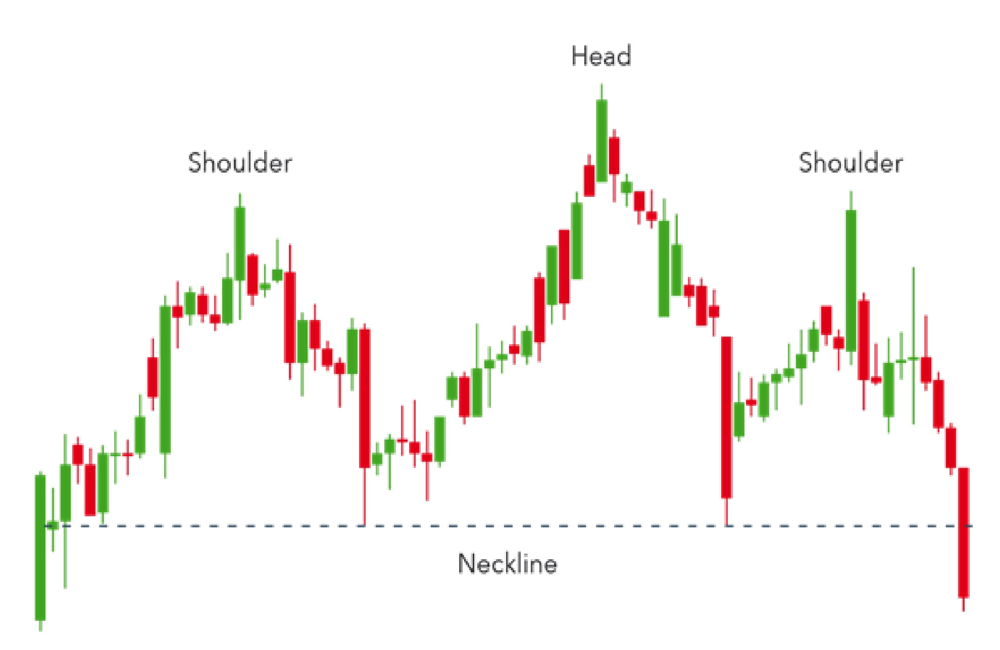
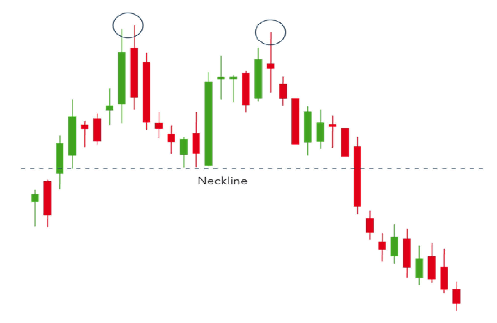

HEAD AND SHOULDER PATTERN
Head and shoulders is a chart pattern in which a large peak has a slightly smaller peak
on either side of it. Traders look at head and shoulders patterns to predict a bullish-to-bearish
reversal.
Typically, the first and third peak will be smaller than the second, but they will all fall back to the
same level of support, otherwise known as the ‘neckline’. Once the third peak has fallen back to the
level of support, it is likely that it will breakout into a bearish downtrend.

DOUBLE TOP
A double top is another pattern that traders use to highlight trend reversals.
Typically, an asset’s price will experience a peak, before retracing back to a level of support.
It will then climb up once more before reversing back more permanently against the prevailing trend.